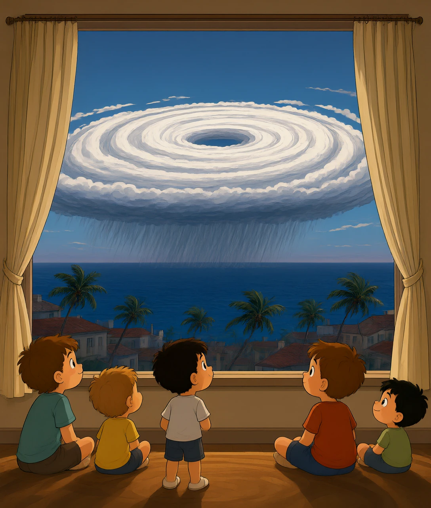
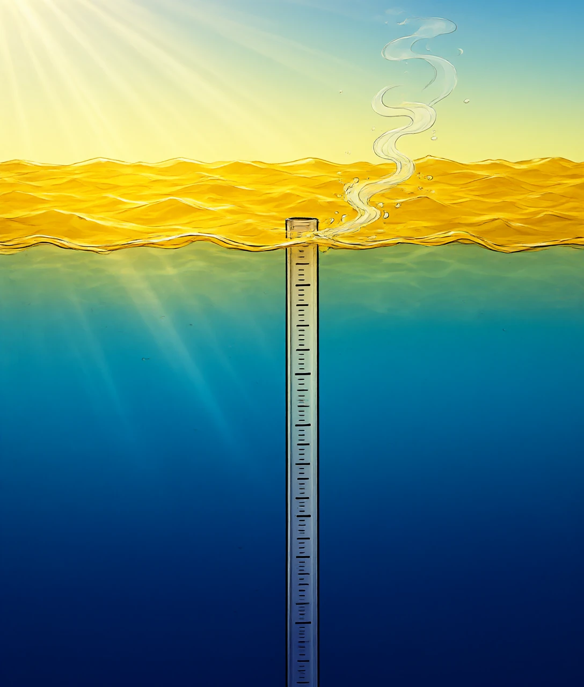
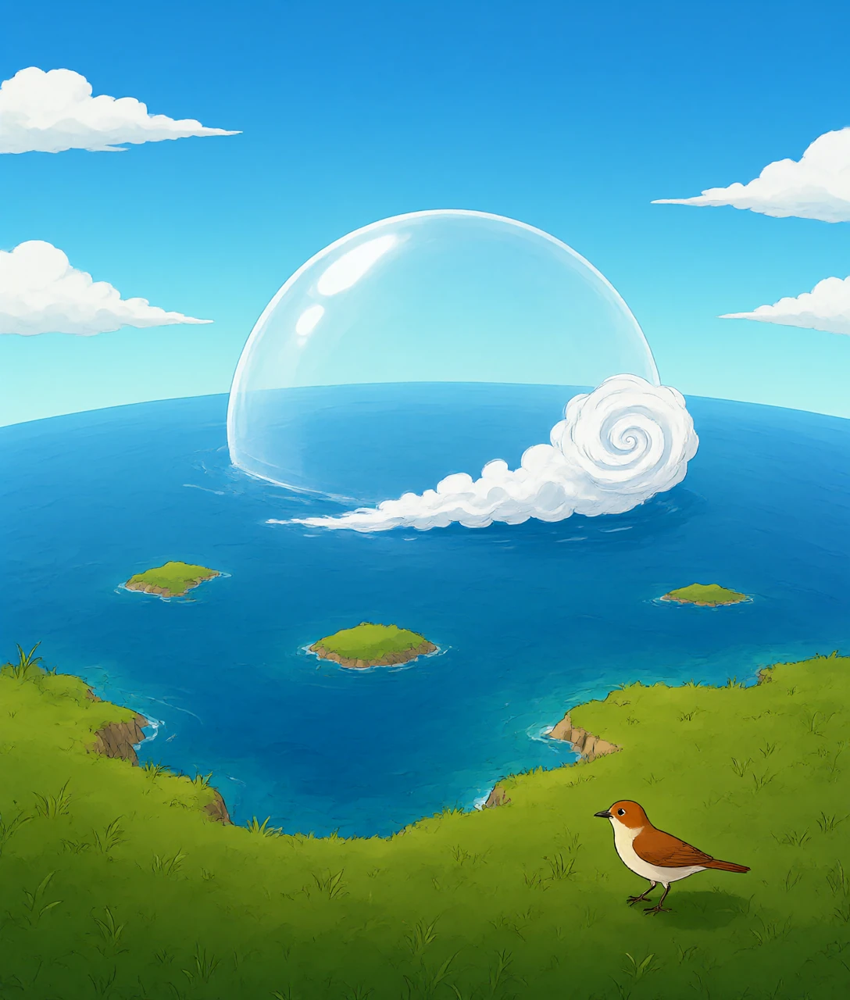
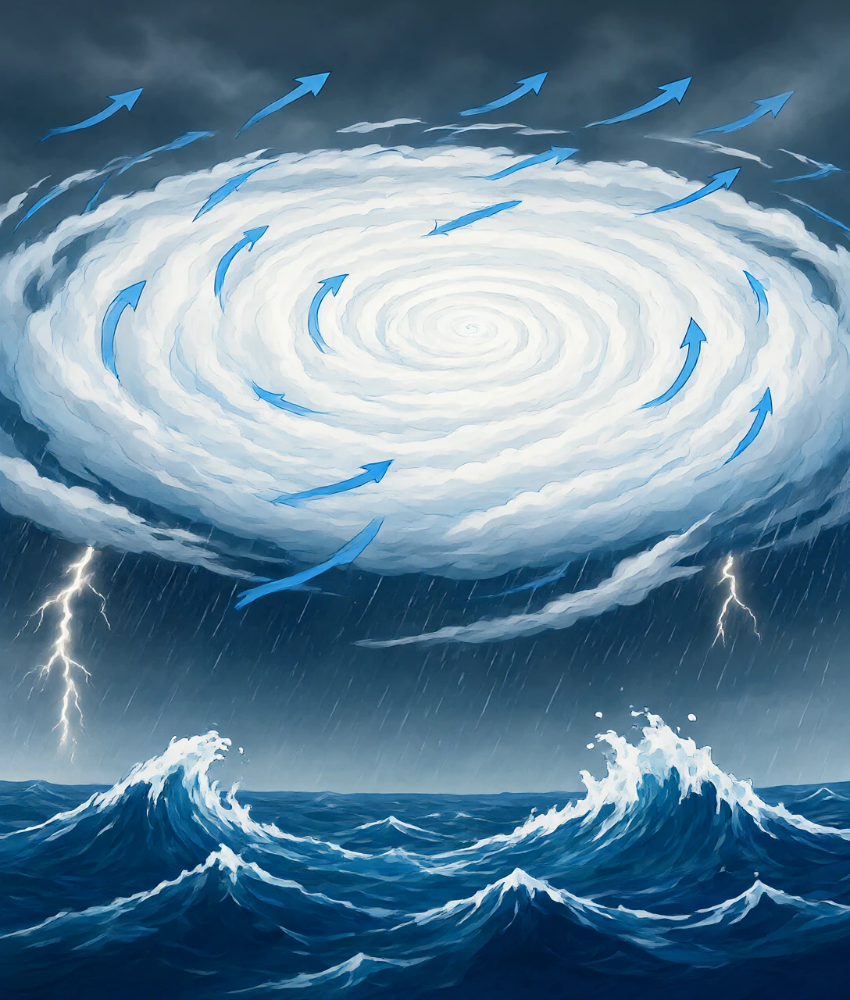
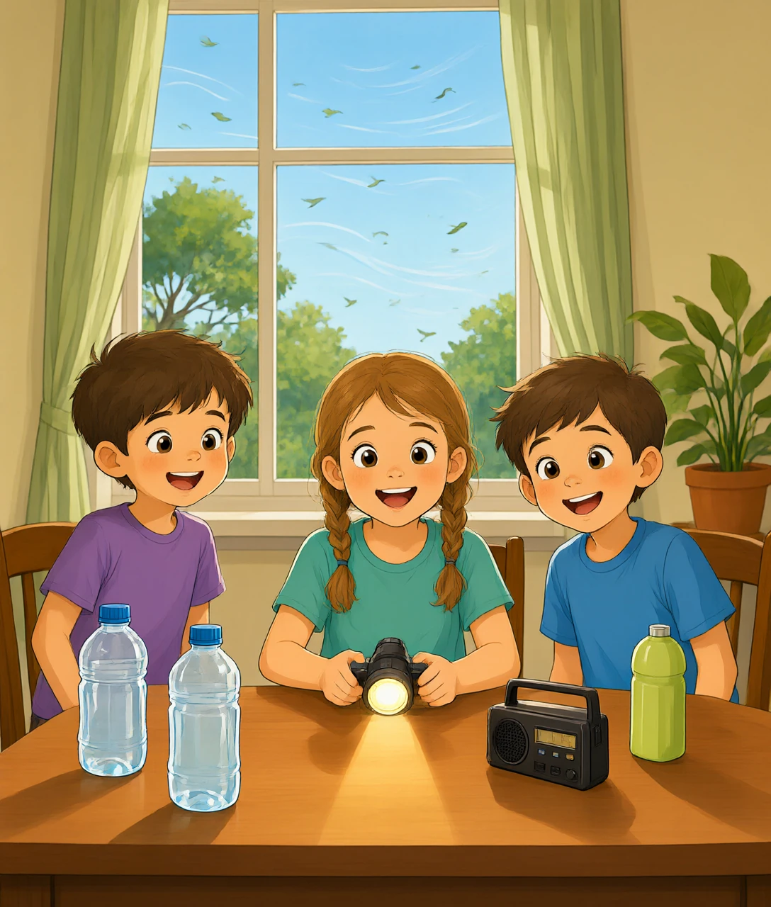

从台风「蔷琵」说起：海水记账、高压开车、冷空气添柴

2026 年 10 月 15 日下午，西北太平洋上悄悄生成了一个涡旋。它叫「蔷琵」（CHAMPI），名字来自老挝，意思是——一种花。
到 10 月 23 日，这朵「花」已经长成了强台风，中心最大风力 14 级，位置在台北东偏南方向大约 185 公里的海面上。它的巅峰一度达到 68 米每秒——换成时速是 245 公里，比高铁还快一倍多。江苏东南部、上海、浙江中东部、福建东北部、台湾岛中北部，都下了大到暴雨。
很多人会愣一下：都十月底了，台风怎么还在？台风不是夏天的事吗？
我们习惯把季节当成开关：夏天有台风，秋天没有。可台风根本不认日历，它认的是一个数字——海面温度 26.5℃。
只要有一大片海水，表层温度超过 26.5℃，而且这层暖水足够厚（大约 50 米以上），台风就有可能「点得着」。这条线就像火柴的摩擦面：热海水是火柴盒，台风是那一下划出来的火。
为什么偏偏是 26.5℃ 这个数？因为台风是一台烧开水的机器。它要把海水烧成水汽，水汽升到高空再凝成云，这一路上又放出热来把空气烘暖。海水越热、蒸发越快，这台机器进的「燃料」就越足。温度太低，水汽供不上，机器就转不起来。
那么问题来了：太阳最猛的六月，海水反而没那么热。为什么十月了，海还是暖的？

这里有个特别朴素的原因：水存热的本事比空气大得多。
把 1 克水加热 1℃，需要大约 4.2 焦耳的热量；把 1 克空气加热 1℃，只要 1 焦耳左右。差了四倍多。而整个海洋有几千米深、覆盖七成地球表面——它像一只巨大无比的热水袋，被太阳晒了一整个夏天，热全都存在里面。
存得多，就升得慢；升得慢，凉得也慢。北半球接收太阳热量最多的时候是 6 月下旬，但海水温度的最高点要往后拖两三个月才出现。九月海水最热，十月还在退烧的路上。就像你关了火，一锅汤不会立刻变凉，它得慢慢散热。
所以十月的西北太平洋，暖水层还很厚，26.5℃ 的等温线还盖着一大片洋面。台风的火柴盒还在，火自然还能划得着。
但海水变热只是备好了燃料。要变成一场台风，还得有一套「搬运—释放」的循环，一共四步。
第一步，海水蒸发。水从液态变成水汽，要偷偷吸走一大笔热——每克水大约 2260 焦耳，相当于把同样一克水加热 540℃ 的热量。所以海面蒸发的时候，其实是在从海里搬走热量。
第二步，水汽上升。热空气轻，带着水汽往上飘。越往上越冷，水汽凝结成小水滴，这时它把之前吸走的那笔热原封不动地还回来。
第三步，空气被烘得更暖。暖了就更轻，就继续上升；海面又有新的水汽补上来。只要海水够热，这个循环就会自己加速——这就是台风的发动机。
第四步，地球自转给它「上发条」。上升的空气往中心挤，被地球自转一扭，就转成了涡旋。越挤越紧，越转越快，风速一路飙升。
燃料有了，发动机也转了。那么，台风会往哪儿走？这件事，台风自己说了不算。

台风自己不会挑路。它更像河里的一片叶子——叶子不会决定河流往哪儿流，它只是被水推着走。推着台风走的，是一团巨大的空气：副热带高压。
副热带高压是一大片下沉气流形成的暖高压，常年待在副热带海面上，像一顶扣在海上的大锅盖。它的边缘有一圈稳定的气流，台风就顺着这圈气流往前跑。
夏天，这顶锅盖位置偏北，台风沿着它的南侧往西偏北走，所以多登陆华南、华东。到了秋天，太阳往南退，锅盖也跟着东退南移，台风生成的位置更靠低纬度，走的路整体偏南，更多地冲着广东、海南、台湾去。
更麻烦的是：秋天这位「司机」容易分心。北方的冷空气一南下，可能把这顶锅盖顶出个缺口。锅盖一断，原本向西的台风突然失去引导，就可能掉头北上，奔向日本；冷空气要是弱一点、来得晚一点，锅盖不断，台风就继续西行扑向我国沿海。
「蔷琵」就是这样一朵让人揪心的花。气象专家说，10 月 21 日到 22 日是决定它命运的关键窗口——看冷空气和副高谁更强势。这种「临门一脚才定路线」的情况，正是秋台风最难预报的地方。

民间有句话叫「秋台猛于虎」。数据确实支持这个说法：1949 年到 2024 年的统计里，7 月生成的台风中，巅峰强度达到台风级及以上的占 59%，8 月 56%，9 月 64%，而 10 月高达 74%——是全年最高的。
为什么秋天更容易出「狠角色」？冷空气是关键，它的作用像一把双刃剑。
如果冷空气太强，它会直接钻进台风的「心脏」。台风靠中心那团暖空气维持运转，这团暖空气叫暖心结构；冷空气一来，暖心被搅散，台风就像发动机熄火，迅速减弱，甚至会改头换面变成温带气旋——名字还在，脾气完全变了。
如果冷空气不太强，只在台风外围轻轻蹭一下，事情就反过来了：冷暖空气之间的气压差变得很大，风被「抽」得更急，台风北侧的风速加大，大风范围也跟着扩大。同时，暖湿空气被冷空气抬升，像被顶起来的热气球，一路狂凝成雨——暴雨可能下在离台风中心很远的地方，让人措手不及。
还有两个天气条件在帮忙：秋天台风大多生成在遥远的洋面上，「海上跑道」长，有足够的时间和空间长大；秋季高空气流比较稳定，上下层的风速差（垂直风切变）小，台风不容易被「吹歪」，结构更对称、更结实。

十月的台风，比夏天更需要认真对待，原因有三个：路线变数大（冷空气和副热带高压在拔河）；风雨范围大而分散，暴雨可能落在你想不到的地方；海水还很暖，台风靠近陆地后减弱得慢，赖着不走的时间更长。
小朋友能做的事其实很具体：
一、看懂预警颜色。台风预警从蓝、黄、橙到红，颜色越深越危险。看到橙色和红色，就别出门了。
二、不去海边看浪。台风外围的浪最会骗人——看着离岸很远，一个浪头打上来就能把人卷走。拍「勇敢照片」是全世界最不划算的事。
三、暴雨天不趟水。路面积水下面可能藏着被顶开的井盖，还可能有漏电的电线，两样都看不见。
四、家里提前备一点点：一瓶水、一个手电、充满电的充电宝。不用囤，够一两天就行。
五、听大人的话。阳台上的花盆、晾衣杆，台风来之前要收进来——被风吹下去砸到人，后果比你想的严重。
最后留一个想象题。假如海洋不是这样「慢半拍」，而是太阳一晒立刻变热、一不晒立刻变凉，会怎么样？那台风季就会死死卡在盛夏那两个月，来得猛、去得快。正因为海水存热又慢放，台风季才会从盛夏一路拖到深秋，把十月也变成它的舞台。
所以十月为什么还有台风？说到底，是海洋在还账——夏天太阳存进去的那笔热量，海洋要在秋天一点一点交还给大气。懂了这笔账，你就明白：台风不是「夏天的尾巴」，它只是热量的另一种走法。
台风能不能生成，最关键的开关是什么？
A 解析：台风是烧海水的机器，表层水温要超过 26.5℃ 才点得着，和月份没有直接关系。
十月海水还很暖，最主要的原因是什么？
B 解析：水的比热容大约是空气的四倍，整个夏天存下的热要慢慢散，温度峰值比太阳最强的时候晚两三个月。
台风往哪个方向走，主要是谁在起作用？
D 解析：台风像河里的叶子，被大范围气流推着走，副热带高压的位置一挪，它的路线就跟着改。
冷空气遇到台风，可能带来什么结果？
B 解析：冷空气不太强时只蹭到外围，气压差拉大、暖湿空气被抬升，风和雨都会加强；太强则会让台风熄火。
统计上，哪个月生成的台风更容易变强？
C 解析：10 月生成的台风里，巅峰达到台风级及以上的占 74%，是全年最高；7 月 59%、8 月 56%、9 月 64%。